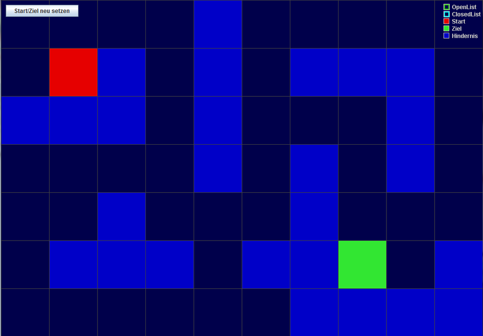
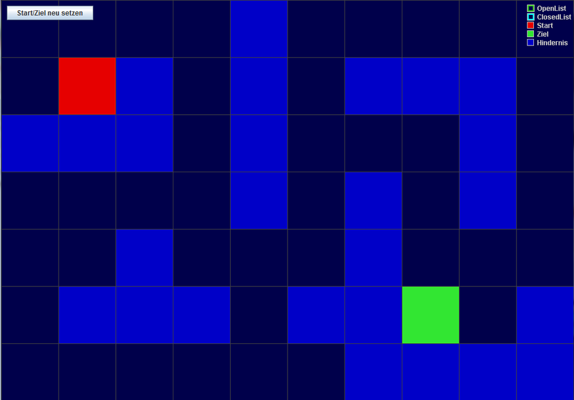
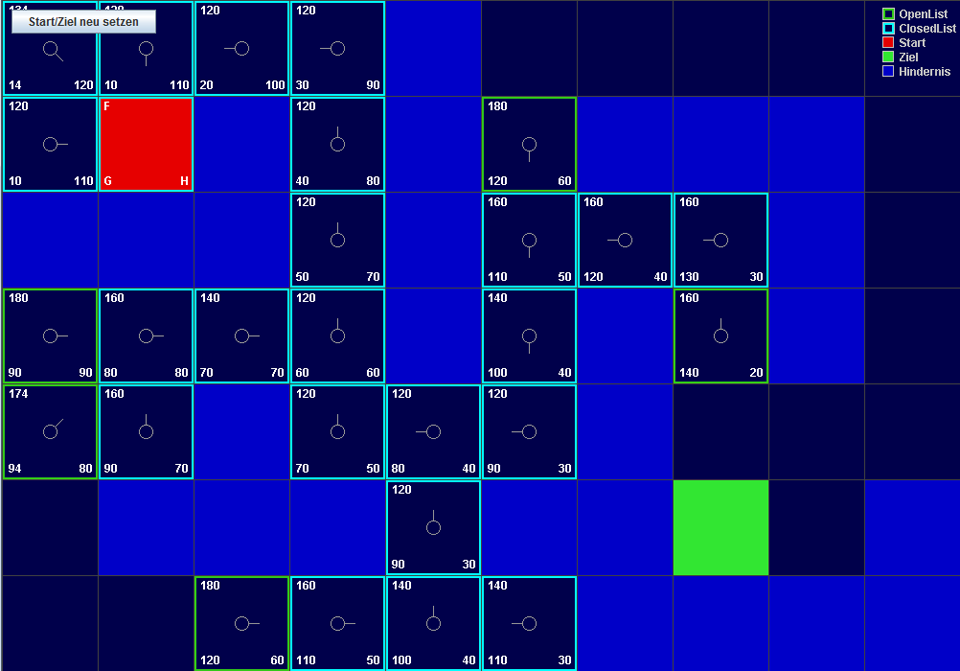
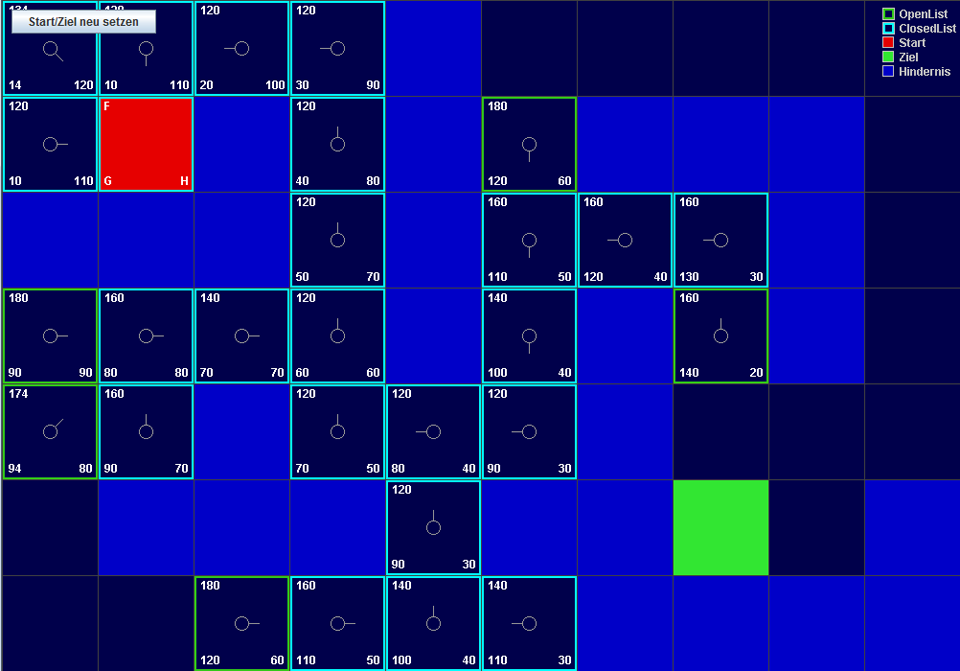

Wegfindung mittels A*-Algorithmus
Diese Java-App visualisiert den A*Algorithmus. Ich habe dieses Programm unter anderem in einem meiner Videos und einem Talk an meiner Fachhochschule dazu verwendet, um den Algorithmus zu erklären. Das Programm steht in meinem A*-Explainer Repository zum download bereit.
 ">
">
 ">
">

Beschreibung
Dieses Programm soll den Arbeitsprozess des A*-Algorithmus Schritt für Schritt visualisieren. Das Ziel des Algorithmus' ist es den kürzesten Weg von A nach B auf einer Tile-Map zu finden.
Steuerung
Durch den Knopf im oberen rechten Eck lässt sich durch 2 Modi wechseln. Je nach derzeitigem Modus wird durch einen Linksklick entweder ein neues Hindernis gesetzt oder der Start neu gesetzt, während ein Rechtsklick entweder ein Hindernis entfernt oder das Ziel neu setzt.
Durch wiederholtes drücken der Leertaste kann der A*-Algorithmus Schritt-für-Schritt visualisiert werden. Mit der Enter-Taste kann man direkt zum Endpunkt des Algorithmus' springen.
Entwicklungszeit:
Anfang 2014